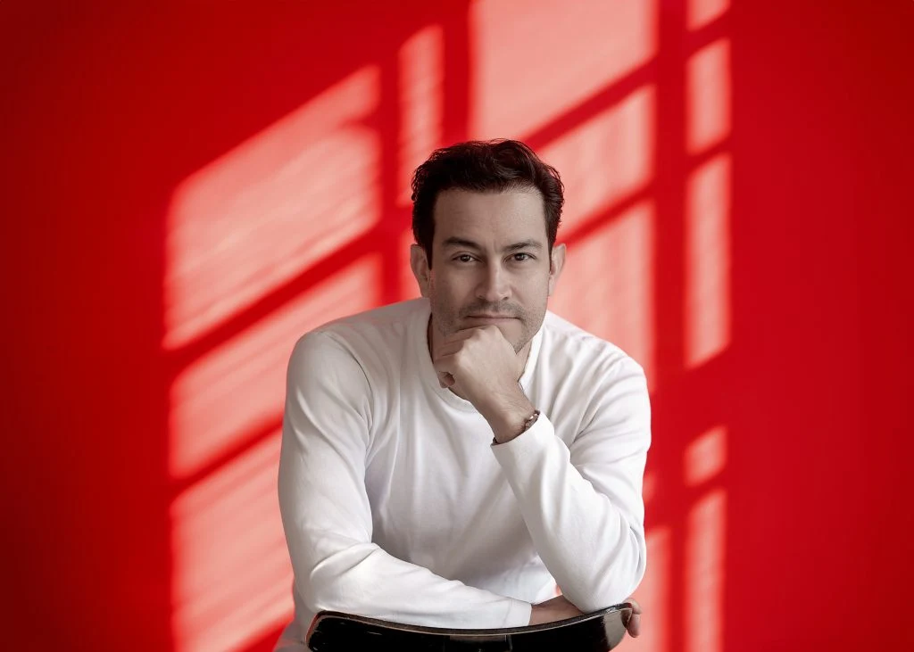
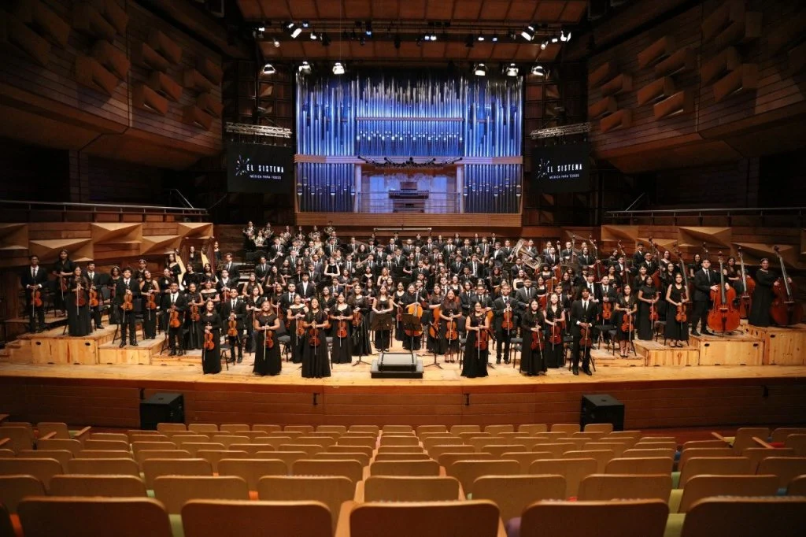
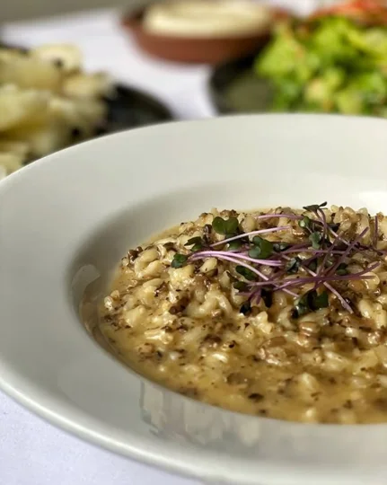
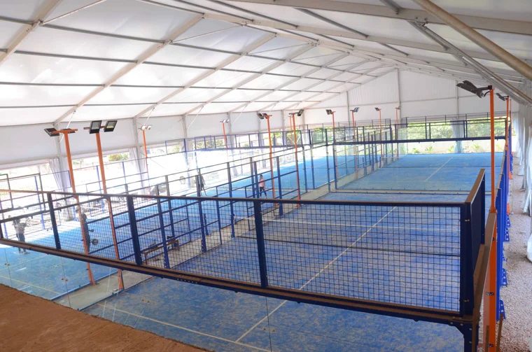

21Sáb · Nov
Música
Ver detallesDiego Matheuz dirige a la Sinfónica Simón Bolívar
Quebrada Honda · 5:00 p. m.

Quebrada Honda · 5:00 p. m.

Quebrada Honda · 11:00 a. m. · Entrada libre
Teatro Trasnocho · Las Mercedes · 3:00 p. m. · Ref. US$18
Por ahora no hay funciones anunciadas para esta selección. Consultar las carteleras locales
Ofertas publicadas por Experiencias Club. Consulta la vigencia y los requisitos de afiliación antes de pedir.
San Agustín del Sur · Cocina peruana
30 % de descuento en el menú con cupón.
Ver cupón del 30 %
El Hatillo · Carnes
Hasta 15 % de descuento. Consulta los cortes incluidos y las condiciones del cupón.
Ver cupón de Casa ResElige una actividad y completa tu compra o reserva directamente con el proveedor.

Los Palos Grandes · Pádel
Reserva una cancha por 90 minutos. El club utiliza créditos que compras desde tu cuenta.
Solicitar cancha por WhatsAppReservar con la app del clubLas Mercedes · Ciclismo indoor
Consulta las clases de ciclismo en sala, elige tu horario y reserva tu bicicleta en Dooit.
Reservar clase de cyclingPara seguir explorando